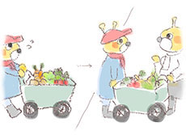

契約農家から直接仕入れた新鮮な素材だけを使い、1つ1つ丁寧に手作りしています。
無農薬!おいしい有機野菜だけを使用しています。

すべて無農薬!
自然のまま育てられた新鮮な野菜・果物だけを仕入れています。
もちろん安心の国内産。
日本各地から様々な食材を取り寄せています。
例えばキャベツは福岡県、トマトは熊本県、チーズや玉ねぎは北海道、レタスは長野県
だから安心・安全でおいしい料理をご提供することができます。
契約農家から直接お店へ

使用する野菜や果物は、契約農家から直接当店へ運ばれてきます。
その日の朝に収穫した、新鮮な野菜や果物ばかりです。
これをすぐに専用の冷蔵庫に入れ保存します。
その後、オーダーを受けてから取り出し調理します。
だからいつも新鮮フレッシュ!とれたて無農薬のおいしさを味わってください。
オーダーを受けてから、手作りしています。

一番おいしい状態で召し上がっていただけるように、作り置きではなく、すべてオーダーを受けてからお作りしています。
だから、いつも出来立て新鮮
ピザは熱々とろ～りジュースはしぼりたて！
素材の良さを生かし、一番の食べごろでお出しします。